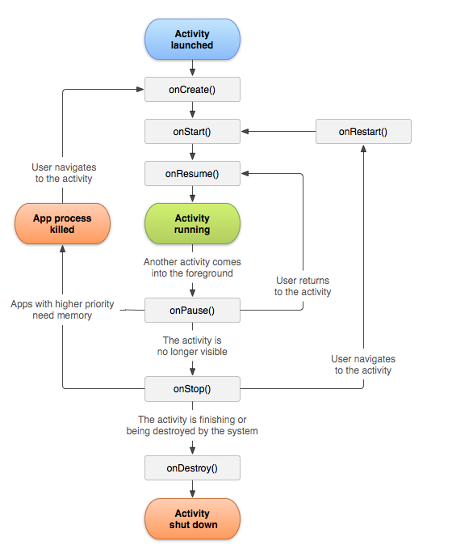
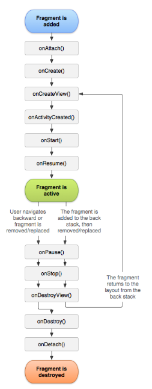

10. Fragment Lifecycle
Fragment Lifecycle
Fragment Lifecycle
Because a Fragment can be created, added to the screen, then removed from the screen, it has its own lifecycle. And guess what? Android provides asynchronous callbacks where you can get notified of these state changes. The style of these callbacks is similar to the Activity.
Imagine an Activity containing a Fragment that takes up the whole screen. When the Activity is created, the Fragment is created as well. When the Activity is resumed and active, the Fragment is resumed and active as well. There is a close relationship between the Activity lifecycle and the Fragment lifecycle.
The Fragment also has additional callbacks where you, as the developer, can get notified when it is attached to the enclosing Activity, or detached from the Activity.
If multiple fragments make up a whole screen, then they all need to tie into the same activity. They need to know when the activity is resumed / paused, so they can resume or pause what they’re doing within the fragment. If you swap out and replace different fragments throughout the lifetime of the app, the Fragments need to be created and destroyed properly too.
Remember this is the activity lifecycle.

(Source)
Similarly, the fragment has a lifecycle that is tied to the stages of the activity lifecycle.

(Source)
Fragment is a tricky topic. You’ll encounter Fragments more as you advance in your journey as an Android developer. If you’re curious for more details now, see the Fragment developer guide on how to handle the Fragment lifecycle or how to build a dynamic UI with Fragments. There are also plenty of other tutorials on Fragments written by developers in the community.